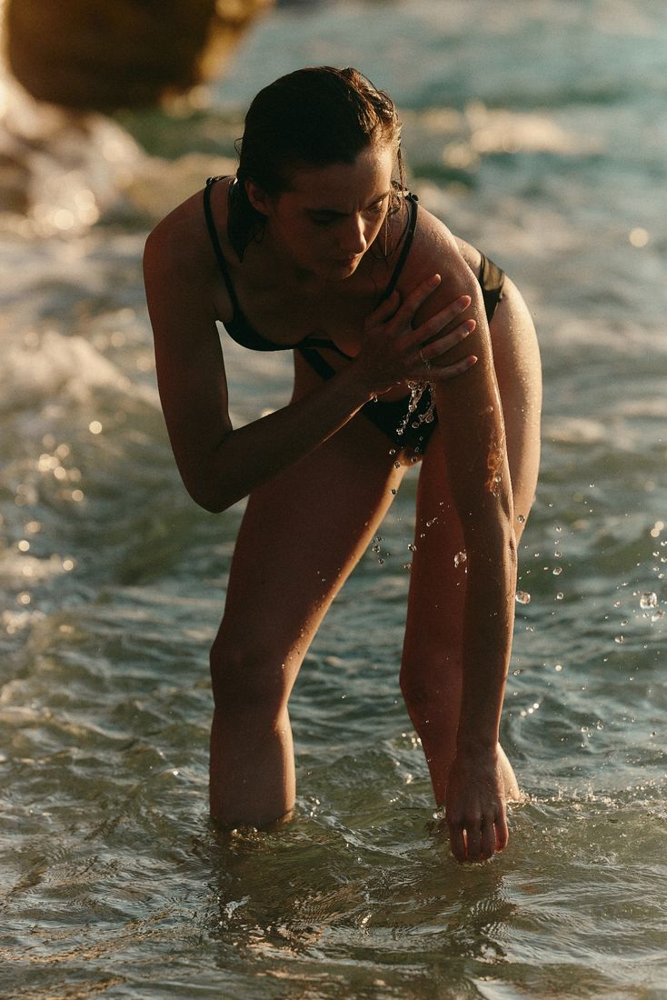
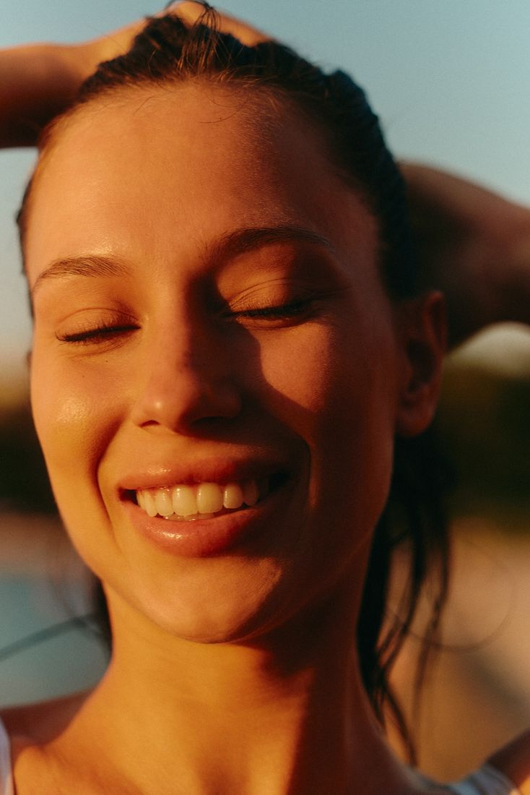
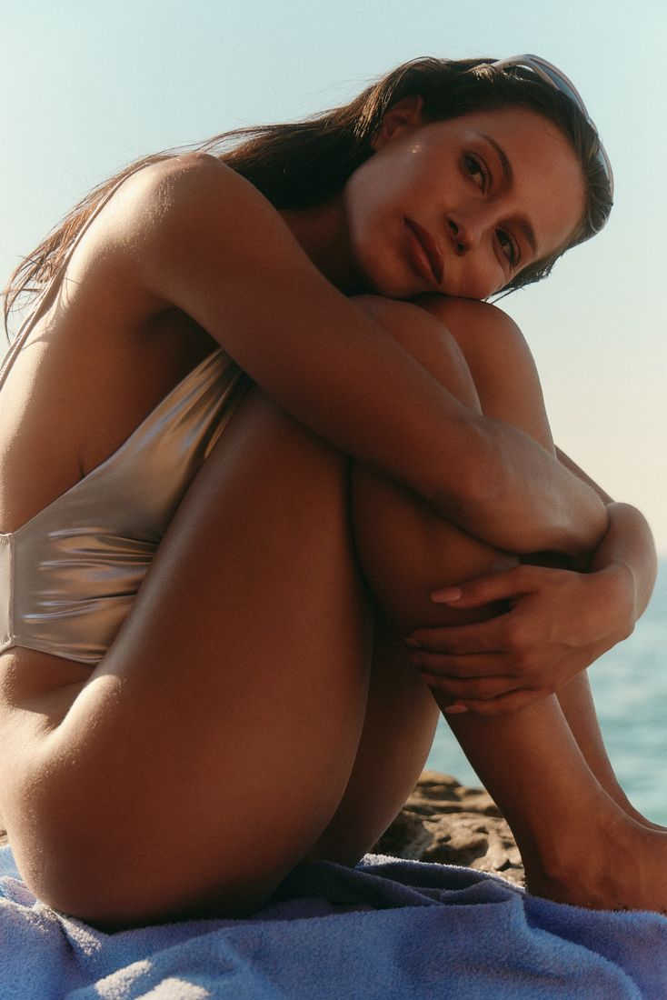

My subject is nature. We don't only live in nature; we are made of it: water, mineral, weather, time. A face caught before it settles is wilderness too. The studies are where I meet that weekly, at a fixed size and a fixed price, numbered from the first.

A woman stands bent at the waist in shallow water, one hand drawn down along her shin, the other reaching toward her ankle. Droplets hang in the air around her, each catching the low sun. The water behind breaks into ripples of green and gold. Her face is lowered and concentrated on the movement.

A face caught before it settles. This is the hour the studies are trying to hold.
Why it is built this way
Jean Smith has sold more than fifteen hundred 11 × 14 inch portraits from her East Vancouver apartment since 2016, at a hundred US dollars each, posted on Facebook and gone within minutes. Her monthly expenses are a thousand dollars. Everything above that has gone toward a free artist residency, and by 2021 that fund had passed two hundred thousand.
The engine is that almost nothing varies. One size, one price, one subject, one rhythm. Each variable left open would cost a decision every week, and the decisions are what exhaust a practice run alongside a job.
An hour is the natural unit of my own version. A pencil portrait or an alla prima study on archival paper reaches finished quality inside an hour, at a level of skill where I do not get stuck. Six of them fit inside a Sunday.
What stays fixed
Format
8 × 10 inches, archival paperOne size only. It fits the hour, ships flat, and is small enough that someone can own five.
Medium
Pencil, and alla prima in acrylicBoth reach finished quality inside the hour.
Subject
The body and the portrait as natureOne premise, varied endlessly inside it.
Price
$150Flat. No negotiation, no sale prices. Accessibility here is a choice.
Numbering
Sequential from 001, permanentIt marks a practice rather than inventory, and makes milestones legible.
Rhythm
One release a month, at a fixed hourFirst come, first served. Work made after a release joins the next month's group.
Donation
$25 of every sale to Arts UmbrellaCountable, easy to state, easy to report. My grandmother taught me to paint at three, and Arts Umbrella is where that points.
Naming, and what stays up
We Are Studio Studio in Hamburg names a series and then codes the individual piece inside it. Bijou Jar W33, Bijou Jar P16, Forrest Vase #3. The series carries the recognition and the code carries the specific object, so nothing needs a title invented for it.
That answers a question the numbering left open. Yukhnovich labels by year alone, which is clean but says nothing about which body of work a sheet belongs to. A series name plus a running number does both, and it costs no decision at the end of a studio day.
Samantha Haring's site adds the timing. Her recent years sit flat as 2021 through 2026, and older work is collapsed into named series with date ranges: Still Life 2019-20, Sinks and Surfaces 2017-18, Gray Noise 2013-14. The names were applied looking back. So the series number can start on the first sheet and the name can wait until there is enough work to see what it was.
Two more things from that shop worth copying. Sold work stays listed rather than being taken down, so the collection reads as a record of what the practice has made and what people wanted. And the collection page carries one plain line saying the pieces are hand-made and vary. Colour shifts between screens, so work on paper needs the same sentence, and one honest line handles it better than a returns policy does.
The month
Two Sundays go to studies and two are held for larger work. Select a phase.
The numbers
Twelve pieces in a typical month at $150 is $1,800 gross. Materials, the finishing kit and the payment fee come to roughly $13 a piece. My floor per study is about $62 once the hour and a share of overhead are counted, so the margin is real. Shipping is charged to the buyer at cost. At twelve sold, $300 goes to Arts Umbrella.
These floor costs are midpoint estimates. I will replace them with real figures once I have tracked actual hours and materials across a full series.
Before the first release
0 of 7 complete

Small work is a different path rather than a lesser one.
Studies as their own body of work
Flora Yukhnovich gives her studies a section in the navigation level with the paintings. They are not filed underneath the finished work as preparatory material. They are oil on paper, roughly 15 to 22 centimetres on a side, and they are labelled by year alone. No titles.
Two things there are worth taking. Titling by year removes a decision from every piece, which matters at twelve pieces a month. And giving the studies their own section says plainly that they are work rather than evidence of work, which is the position I want them held in.
One thing there pulls against the plan. Her sizes vary by a few centimetres and the orientation flips between upright and landscape. The sheet is serving the work. A fixed size serves a sales rhythm instead: one mailer, one mount, one price, no decisions. Her studies are an archive; Jean Smith’s are a product. Mine are being designed as both at once, and the size question is where those two pull hardest.
Still open
The one-line premise.
Two studio Sundays a month, or four.
Which stage of the drawing a study is. A sanguine gesture and a resolved sanguine drawing are both an hour of work and are not the same object to sell. Deciding this settles the price and the release together.
One fixed size, or a sheet that varies with the work. Fixed simplifies packing, pricing and photography. Variable serves the drawing. This is the decision I am least sure of.
Release day, hour, and checkout mechanism.
Whether the originals inquiry is a plain address or a link with the subject and first line already filled in, as Heather Day does. The second removes the hardest sentence a buyer has to write.
Whether mailing list subscribers see the month's pieces before the public release. Olivier Forgues gives his quarterly list a forty-eight hour window, which is the clearest reason to join a list I have seen.
A fixed amount per sale to Arts Umbrella, or a percentage.
How donated work is treated for tax, as distinct from donated proceeds. My accountant answers this one.